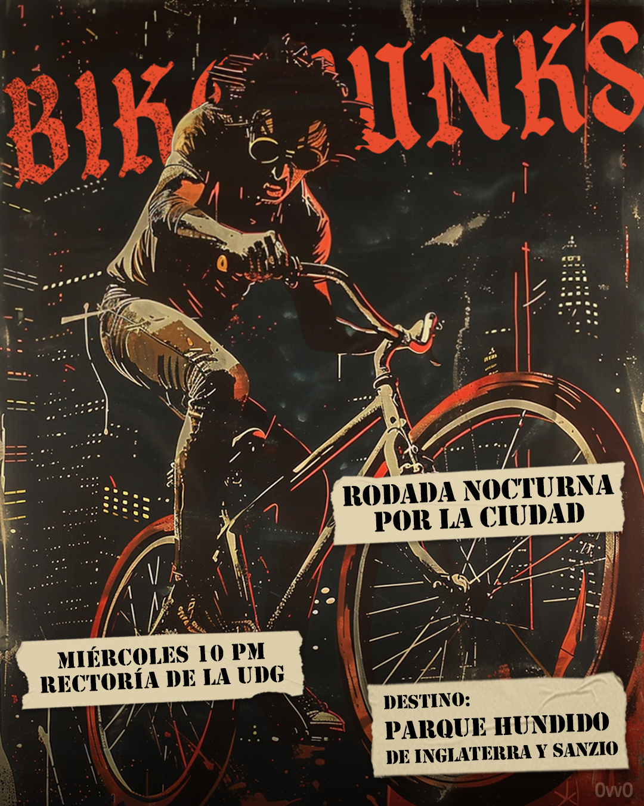
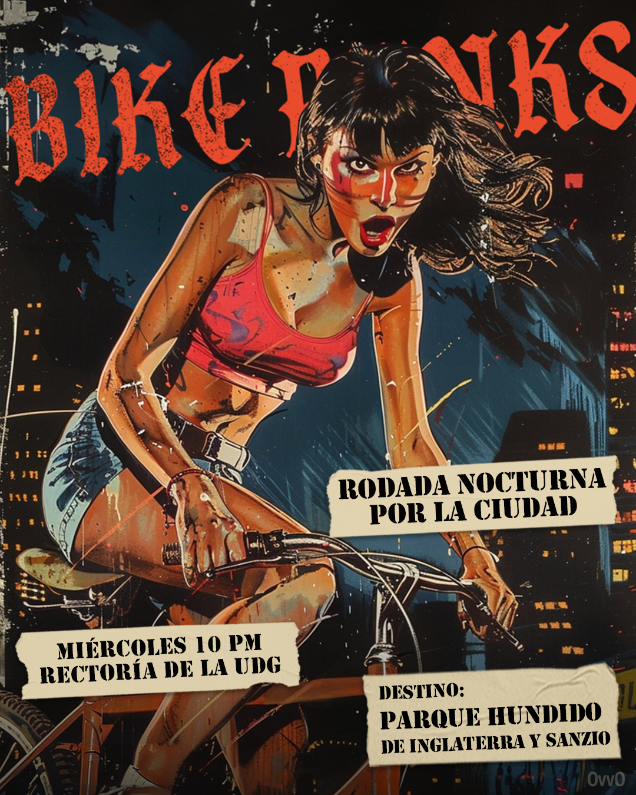
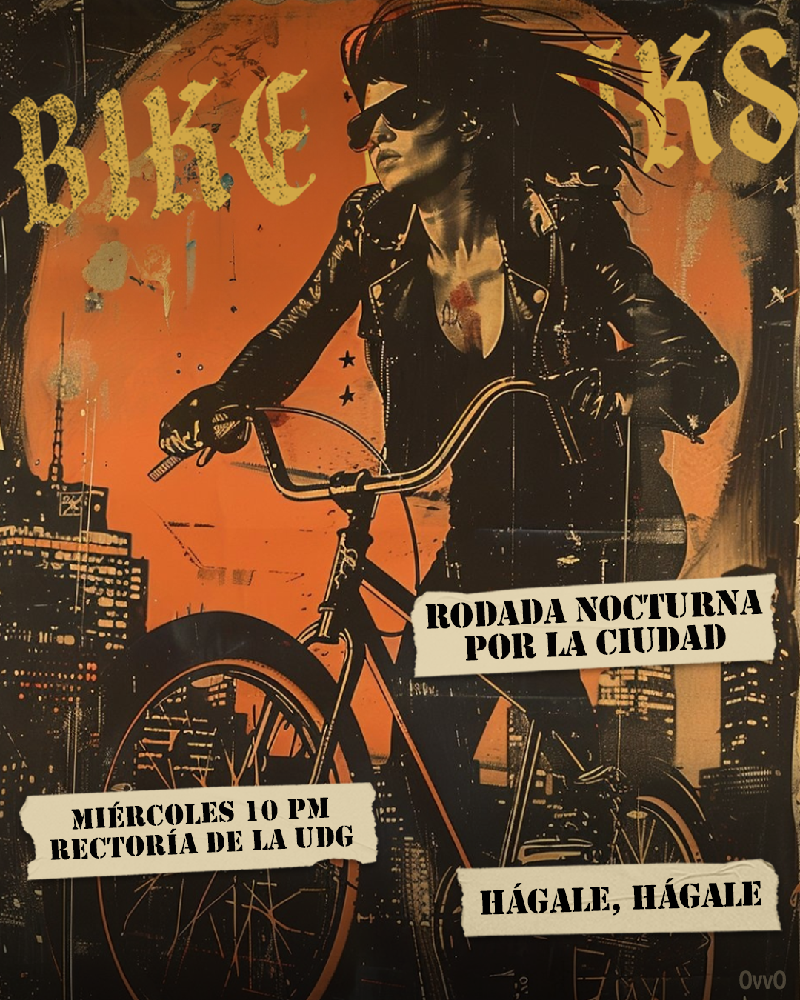
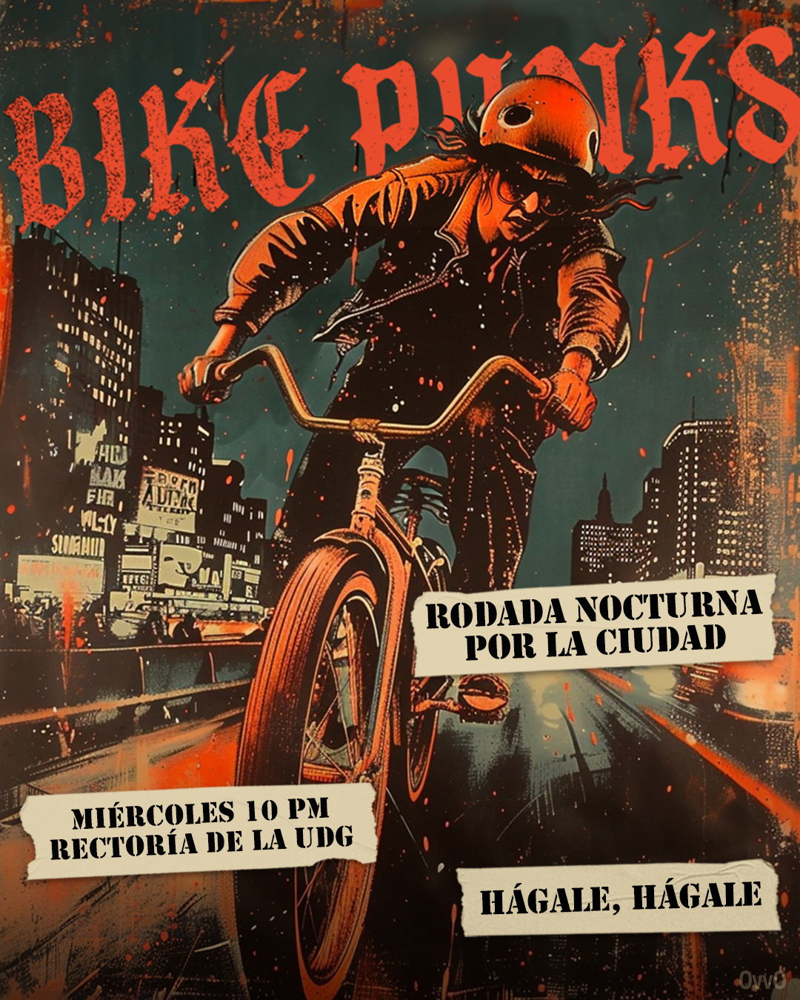
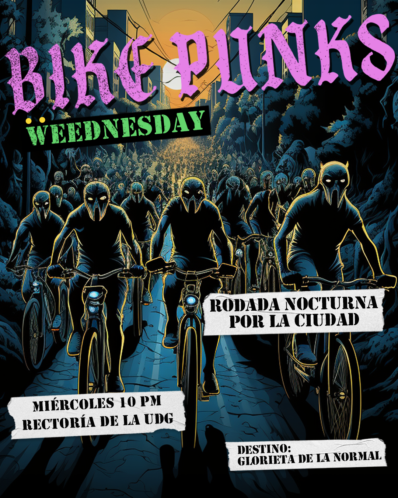

Bike Punks is a self-organized nocturnal bike ride — no sponsor, no institutional backing, just a community that shows up. This flyer series was a collaboration to promote the rides: design in service of the community, no middlemen, no client sign-off chain to slow it down.
The brief was whatever the ride needed that week. That freedom shows in the series — each flyer free to take its own risk while still reading, at a glance, as part of the same underground print run.

Flyer 01

Flyer 02

Flyer 03

Flyer 04

Flyer 05